|
4-3-3
|
Brazil | 2 | - | 1 | Japan |
3-4-2-1
|
| HT 0-1 | ||||||
|
FIFA World CupMonday 29 June 2026
|
||||||
- Venue
- Houston Stadium
- Attendance
- 68,777
- Referee
- Maurizio Mariani
Yellow card14'
Casemiro
Substitution46'
Lucas Paquetá
Endrick
Yellow card48'
Danilo
Goal56'
Casemiro
Assist: Gabriel Magalhães
Substitution66'
Matheus Cunha
Gabriel Martinelli
Substitution90+3'
Casemiro
Fabinho
Goal90+5'
Gabriel Martinelli
Assist: Bruno Guimarães
Substitution90+8'
Bruno Guimarães
Danilo Santos
Whistle45+4'
45+4'
Yellow card12'
K. Sano
Goal29'
K. Sano
Yellow card45'
D. Kamada
- 2
Substitution66'
K. Nakamura
J. Suzuki
R. Doan
Y. Sugawara
- 2
Substitution78'
J. Ito
S. Machino
D. Kamada
A. Tanaka
Yellow card84'
J. Suzuki
Substitution90+7'
D. Maeda
K. Ogawa
Brazil | |
|---|---|
Goalkeeper | |
| 1 | Alisson Becker |
Defender | |
| 3 | Gabriel Magalhães |
| 4 | Marquinhos |
| 13 | Danilo 48' |
| 16 | Douglas Santos |
Midfielder | |
| 5 | Casemiro 14'56'90+3' |
| 8 | Bruno Guimarães 90+8' |
| 20 | Lucas Paquetá 46' |
Forward | |
| 7 | Vinícius Júnior |
| 9 | Matheus Cunha 66' |
| 26 | Rayan |
Substitutes | |
| 17 | Fabinho 90+3' |
| 18 | Danilo Santos 90+8' |
| 19 | Endrick 46' |
| 22 | Gabriel Martinelli 66'90+5' |
Japan | |
Goalkeeper | |
| 1 | Z. Suzuki |
Defender | |
| 3 | S. Taniguchi |
| 21 | H. Ito |
| 22 | T. Tomiyasu |
Midfielder | |
| 10 | R. Doan 66' |
| 11 | D. Maeda 90+7' |
| 13 | K. Nakamura 66' |
| 14 | J. Ito 78' |
| 15 | D. Kamada 45'78' |
| 24 | K. Sano 12'29' |
Forward | |
| 18 | A. Ueda |
Substitutes | |
| 2 | Y. Sugawara 66' |
| 6 | S. Machino 78' |
| 7 | A. Tanaka 78' |
| 19 | K. Ogawa 90+7' |
| 25 | J. Suzuki 66'84' |


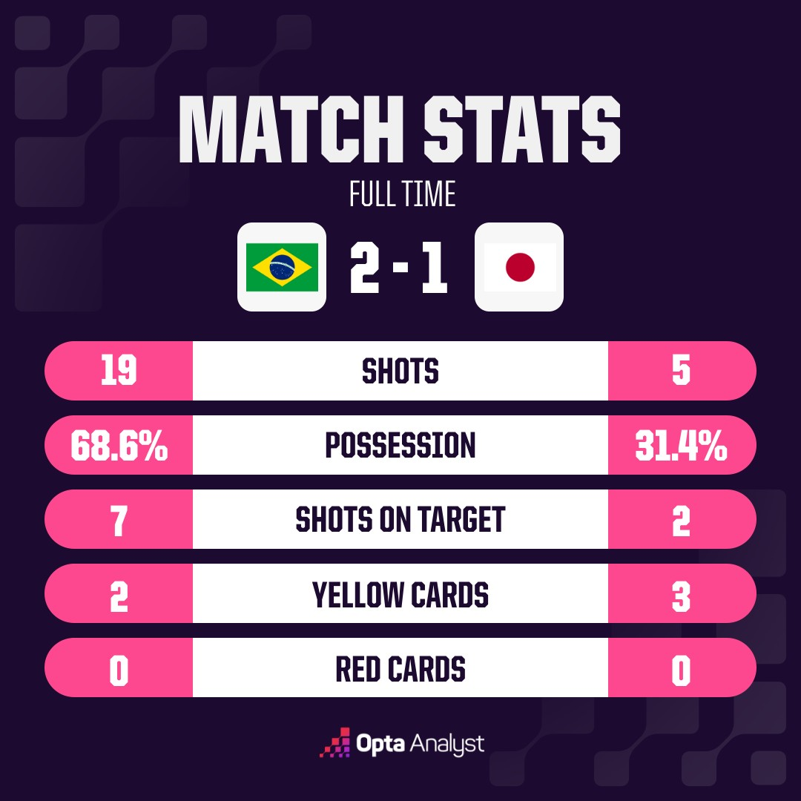
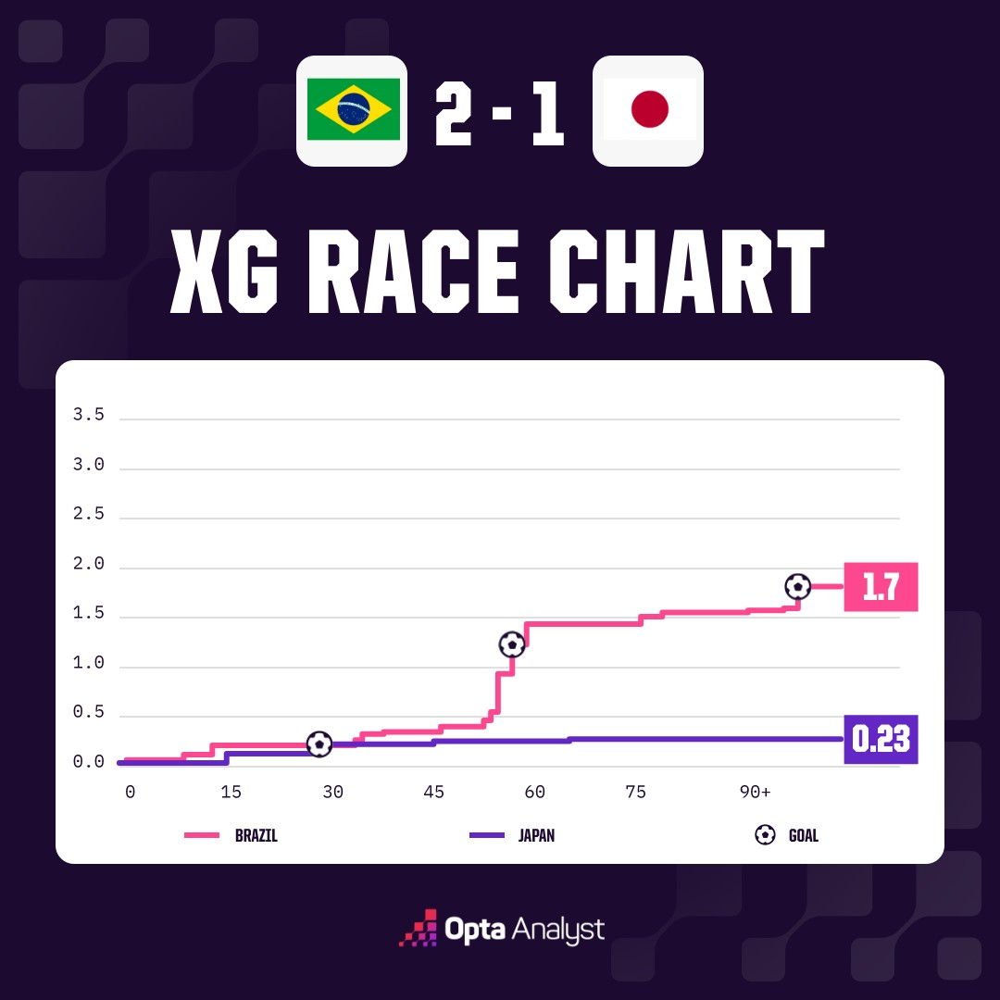
102'
Brazil have won their last 3 games in the FIFA World Cup, their last joint longest winning streak was from 22nd June 2018 to 2nd July 2018.
102'
Brazil have won after conceding the opening goal in the FIFA World Cup for the first time since 12th June 2014 against Croatia (5 games without a win).
102'
Japan attempted 5 shots in this game, their lowest total in a single match in the 2026 FIFA World Cup.
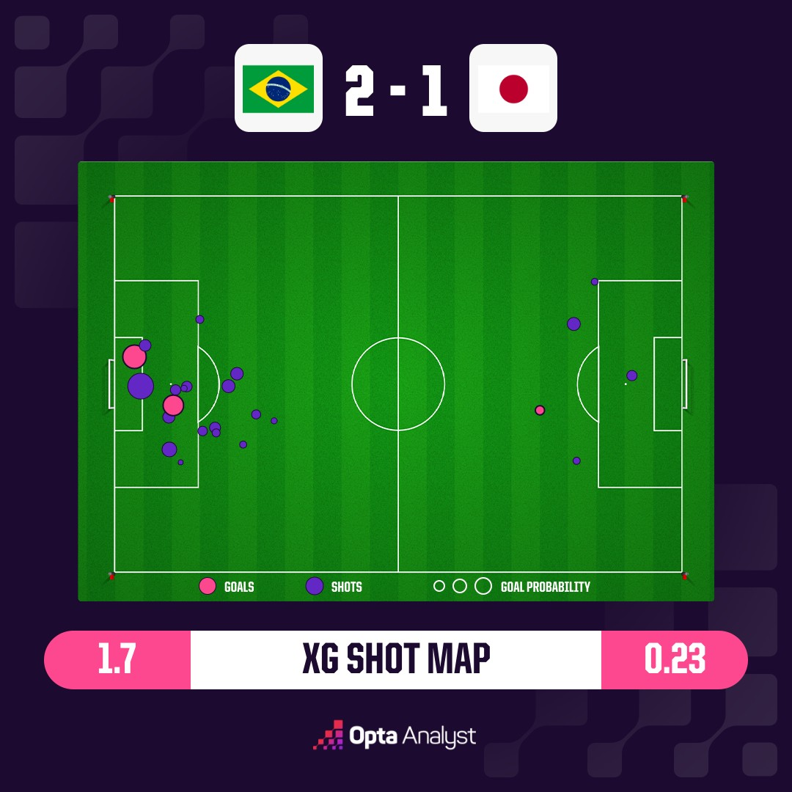
90+11'
IT’S ALL OVER! Brazil have taken the victory, winning 2-1 thanks to goals from Gabriel Martinelli and Casemiro. Brazil can celebrate, but Japan will have to lick their wounds.
90+11'
It’s backs to the wall now — Brazil throwing everything into defending their advantage, with a flurry of crucial interventions.
90+10'
Free-kick! A foul from Shuto Machino on Marquinhos. It is well away from Japan’s goal, so it is unlikely to result in a chance for Brazil.
90+9'
Shogo Taniguchi goes in on Endrick and concedes a foul. The free-kick is not in a particularly dangerous area from Japan’s viewpoint, though.
90+8'
Substitution! Danilo Santos replaces Bruno Guimarães for Brazil as the manager shuffles the pack. Can Danilo Santos make an impression as this match continues?
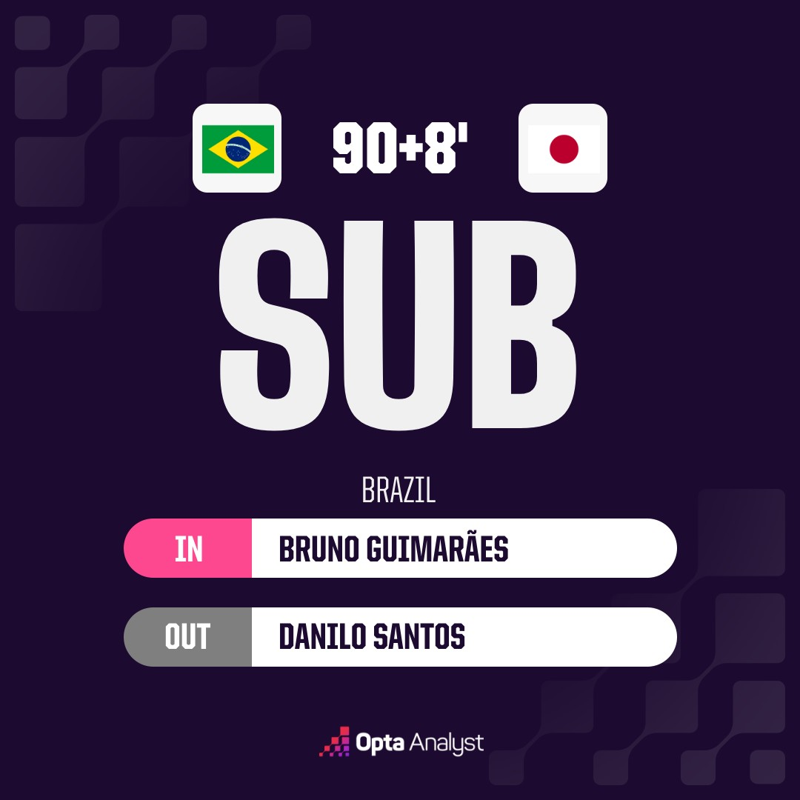
90+7'
The Japan manager is looking to the substitutes’ bench, bringing on Koki Ogawa in place of Daizen Maeda. Will the change make a difference? Let’s find out!
90+6'
Bruno Guimarães has assisted his fourth goal at the 2025 FIFA World Cup, more than any other player.
90+6'
Brazil have attempted the last 5 shots in this game, Japan last shot was taken by Ayase Ueda in the 64th minute.
90+6'
Gabriel Martinelli has scored his first goal in the 2026 FIFA World Cup.
90+6'
GOAL! Will that be the winner for Brazil? They have gone ahead in the closing stages thanks to Gabriel Martinelli, who kept his cool to finish from inside the area. Will they hold on, or can Japan fight back?
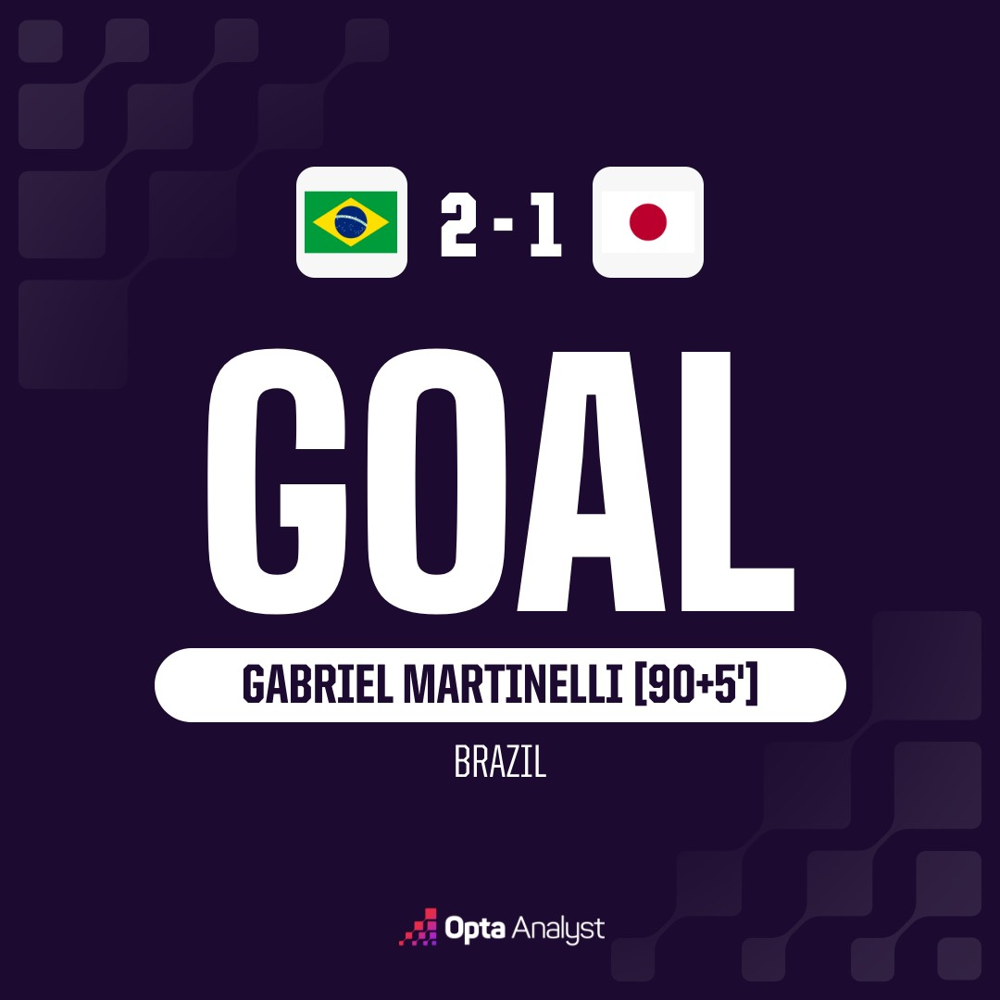
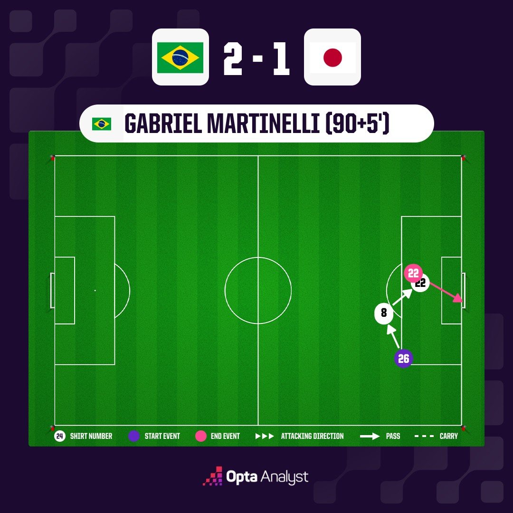
90+4'
MISS! A shot from Fabinho ends up being off target. They might have done a bit better with that one, but it remains Brazil 1-1 Japan.
90+4'
It has been 30 minutes since Japan last attempted a shot in this game.
90+3'
That is bad news for Brazil, as they suffer an injury blow, with Casemiro having had to receive treatment before then making their way off the pitch. Fabinho is coming on.
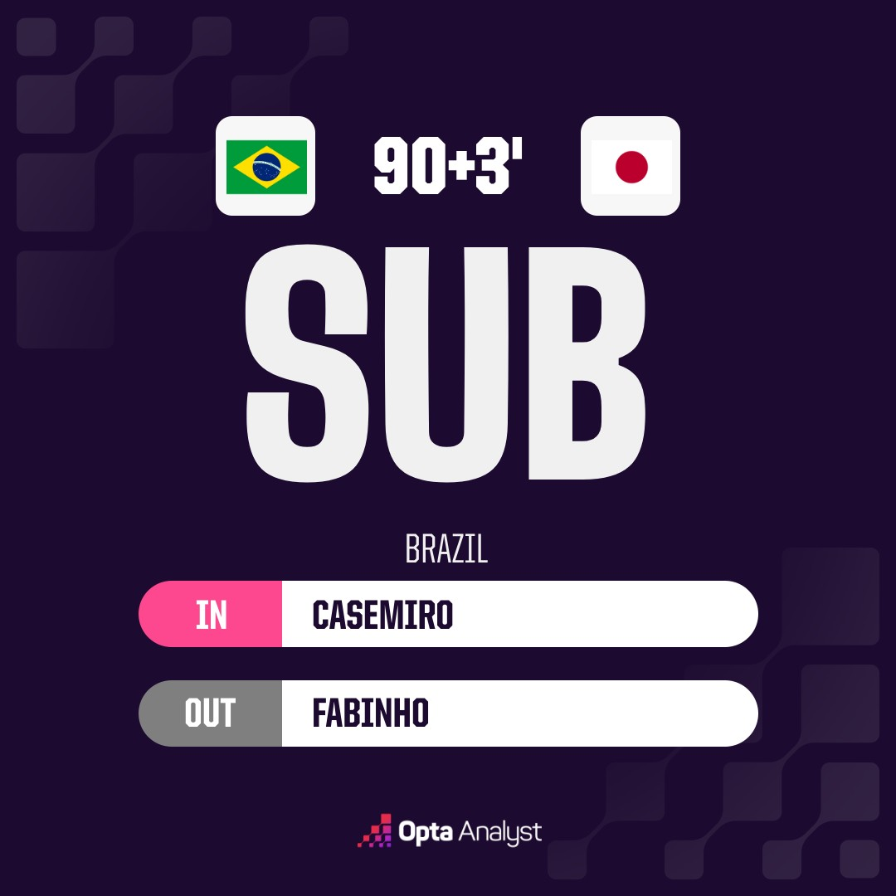
90+1'
This could be a chance for Brazil, after Ao Tanaka fouls Vinícius Júnior, handing them a free-kick in a threatening area. A good set-piece from here could really test the Japan defense!
90+1'
This feels like a spell that could matter - Brazil earning repeated chances to swing it in from wide areas.
89'
Japan have a corner to defend now after Kaishu Sano diverts an attempt from Vinícius Júnior out of play. Can Brazil take this chance to get a good delivery in and really test their opponent’s defence?
88'
Can Brazil make this chance count? They have won a free-kick in a threatening position after a foul from Junnosuke Suzuki on Rayan. Will Japan's defence be tested here?
87'
No goalmouth action for some time now, with neither team having had a shot in the past 10 minutes. Will there be a moment that changes things soon? Brazil have seen plenty of the ball, however, with 64 per cent of the possession in their favour during that period.
87'
There is plenty of possession for Brazil, with 78.66% compared to Japan 21.34 % in the last 15 minutes. However, Brazil have not been able to turn that dominance of the ball into a goal.
85'
It is a corner now to Brazil, with Japan somewhat hanging on here as they look to hold out for a positive result. Can Brazil make something of this set-piece opportunity?
84'
Yellow card! Junnosuke Suzuki will have to be careful from now on after they are cautioned.
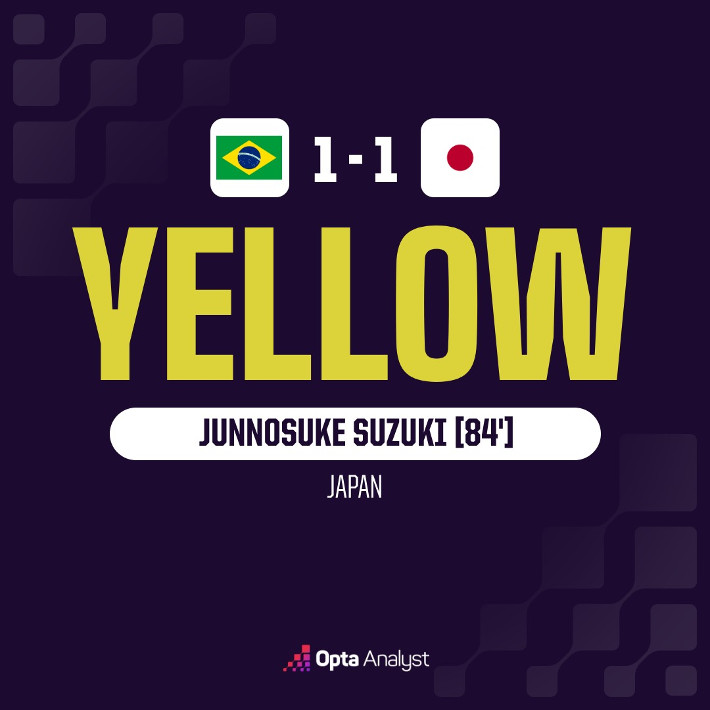
84'
Good play from Danilo, who draws a foul from Junnosuke Suzuki to hand Brazil a free-kick in a dangerous position. Will they create something from this set-piece?
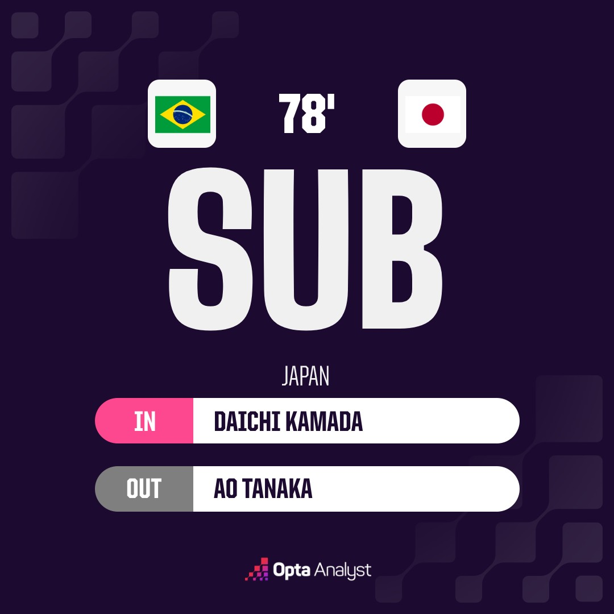
78'
Daichi Kamada’s match is over as Japan decide to make a substitution. Ao Tanaka enters the field in what looks like a tactical change.
78'
Junya Ito’s match is over as Japan decide to make a substitution. Shuto Machino enters the field in what looks like a tactical change.
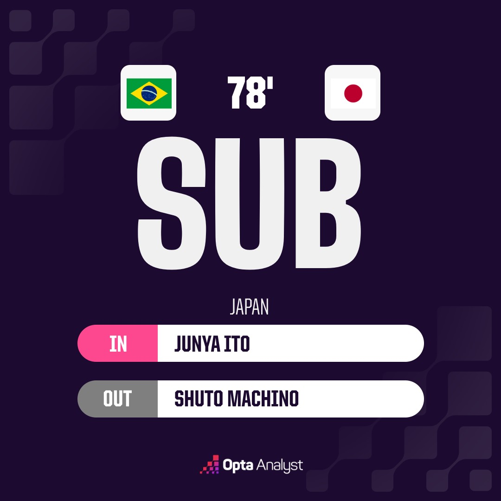
77'
A chance goes begging as Gabriel Martinelli gets off a shot that does not hit the target. They might have done better with that one, but instead it is a goal-kick to Japan.
76'
With 15 minutes of normal time remaining, it is Brazil who have had more of the ball, with 68.46% compared to Japan’s 31.54%.
74'
Corner now for Brazil, as they see a shot from Rayan deflected out of play for a set-piece. Japan have some defending to do, here. Could this result in a big opportunity?
73'
Brazil have had plenty of the ball in the last 15 minutes, with 74.83% possession compared to just 25.17% for their opponents. However, there has not been any shot to come from that possessional dominance, which will be a huge frustration for their coach.
72'
A free-kick to Japan, as Gabriel Martinelli goes in and fouls Junya Ito. However, Brazil will not mind giving one away in this area too much, with plenty of distance to their goal.
71'
In the last 15 minutes, it is Brazil who have dominated the ball, having seen 72.52% of the possession, yet they have not been able to go and turn that into a goal just yet, with their opponents standing firm.
66'
The Japan manager is looking to the substitutes’ bench, bringing on Yukinari Sugawara in place of Ritsu Doan. Will the change make a difference? Let’s find out!
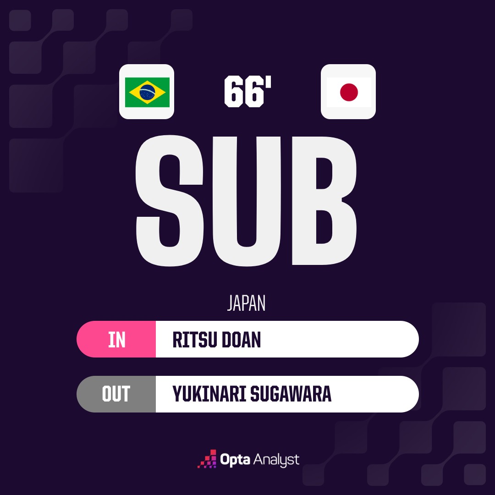
66'
Keito Nakamura’s match is over as Japan decide to make a substitution. Junnosuke Suzuki enters the field in what looks like a tactical change.
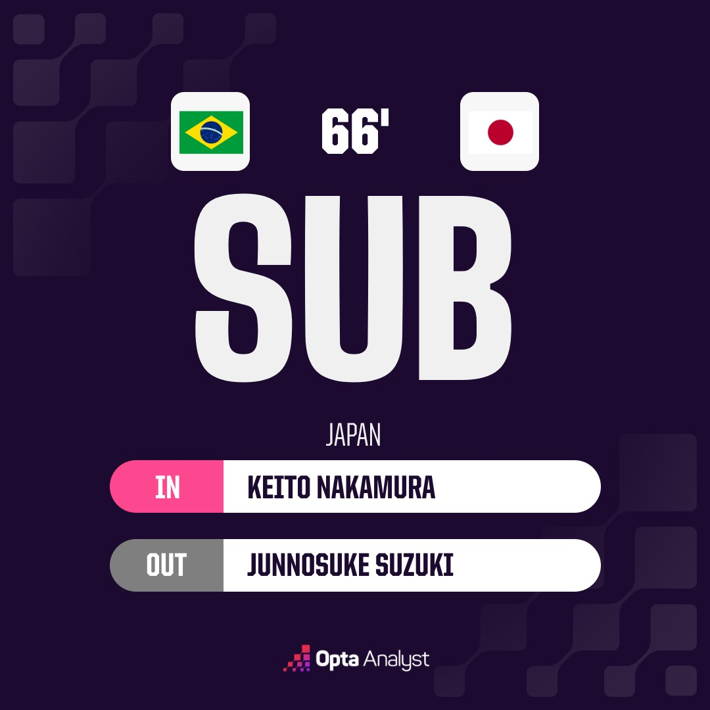
66'
This match is into the last 25 minutes now, and before it goes into the final stages, let’s check on the shots. There have been 19 in total – 14 from Brazil, and 5 from Japan. Of those attempts, 8 have hit the target – 6 from Brazil and 2 from Japan.
66'
Matheus Cunha’s match is over as Brazil decide to make a substitution. Gabriel Martinelli enters the field in what looks like a tactical change.
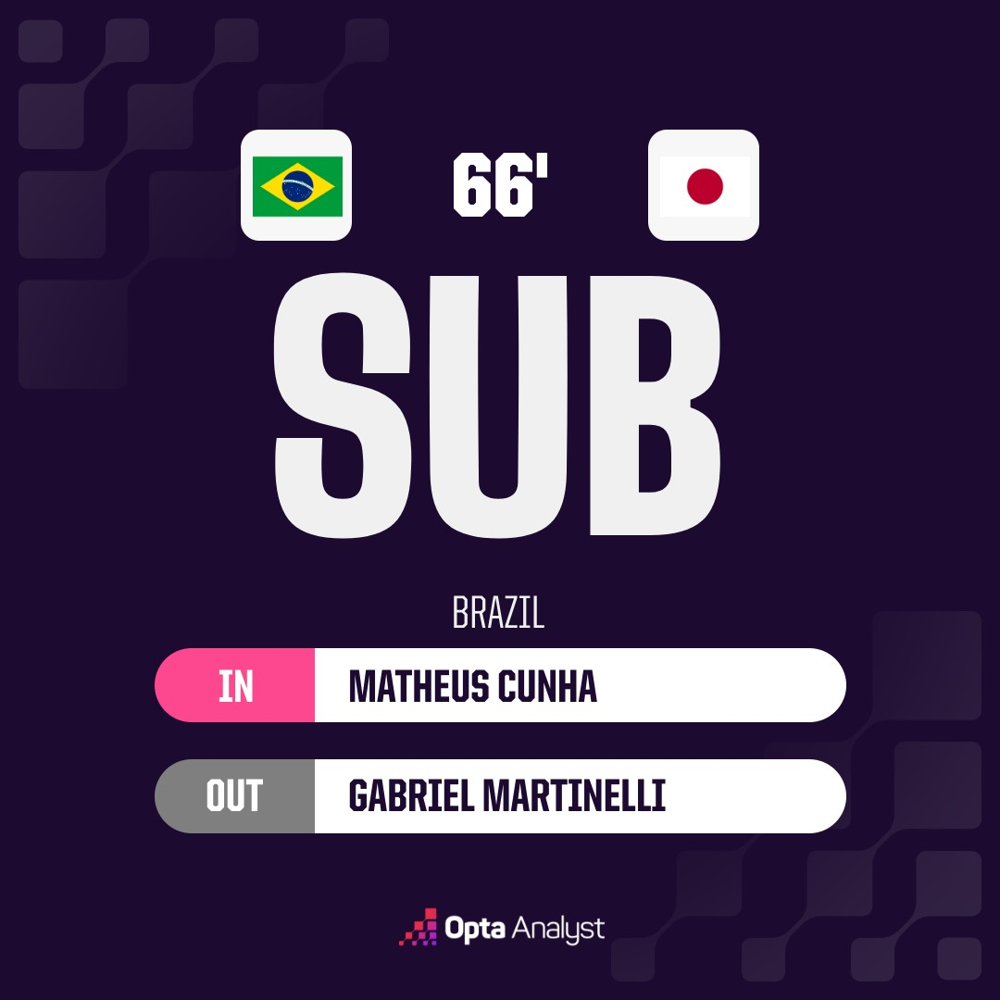
64'
SHOT! Ayase Ueda manages to get a shot off from inside the area, but although it was heading in, they cannot get enough on it to beat Alisson Becker, who makes the save.
58'
MISS! The score remains 1-1, with Japan relieved after Brazil’s Matheus Cunha goes for goal but sends their attempt off target. Not one to write home about, that one.
58'
Zion Suzuki has made 5 saves, his highest total in a single match in the FIFA World Cup.
58'
HUGE CHANCE GOES BEGGING! What a miss that is from Vinícius Júnior, who looked all set to score a goal that their team need, but instead fails to direct their attempt into the back of the net. That was a big, big opportunity for Brazil.
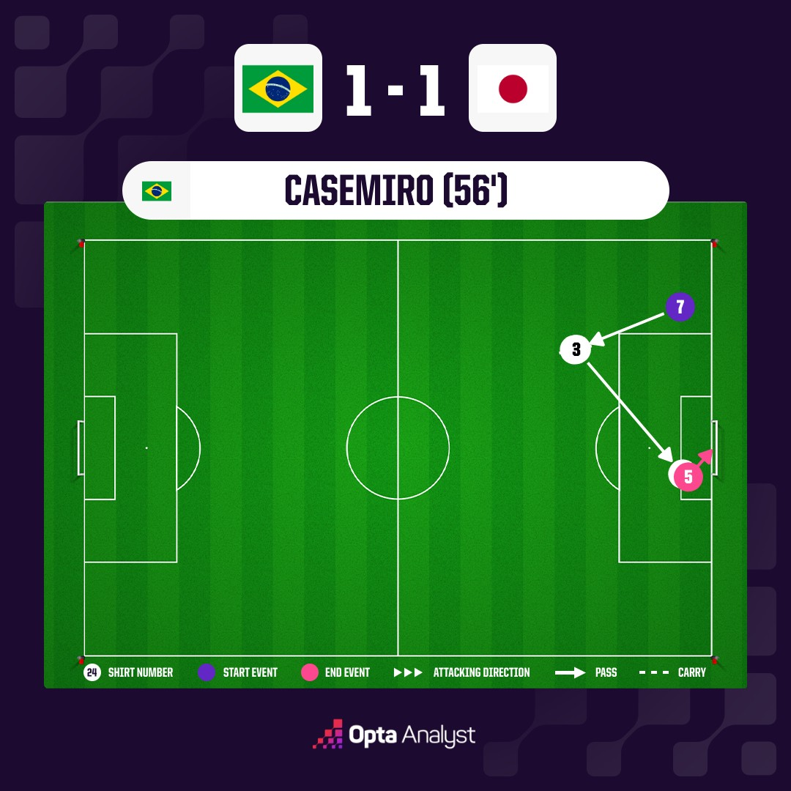
56'
Gabriel Magalhães has assisted his first goal in the 2026 FIFA World Cup.
56'
GOAL! Casemiro scores from inside the penalty area and it’s all level between Brazil and Japan. All to play for now, can either side go on and find a winner?
56'
Casemiro has scored his first goal in the 2026 FIFA World Cup, netting for the first time since 28th November 2022 against Switzerland.
54'
HUGE CHANCE GOES BEGGING! What a miss that is from Casemiro, who looked all set to score a goal that their team need, but instead fails to direct their attempt into the back of the net. That was a big, big opportunity for Brazil.
53'
Excellent defensive work from Japan; their organization and success in key duels are effectively safeguarding their lead.
53'
A chance goes begging as Endrick gets off a shot that does not hit the target. They might have done better with that one, but instead it is a goal-kick to Japan.
52'
WHAT A MISS! Oh dear, oh dear, that is an awful attempt from Bruno Guimarães, as a huge chance for Brazil to score the goal they need goes begging. What a let off for Japan, though. They will have to defend better than that from here on out!
49'
A foul from Matheus Cunha on Takehiro Tomiyasu sees Japan win a free-kick, but it is not in a dangerous position, so Brazil should be confident they can defend it easily enough.
48'
Yellow card! Danilo will have to be careful from now on after they are cautioned.
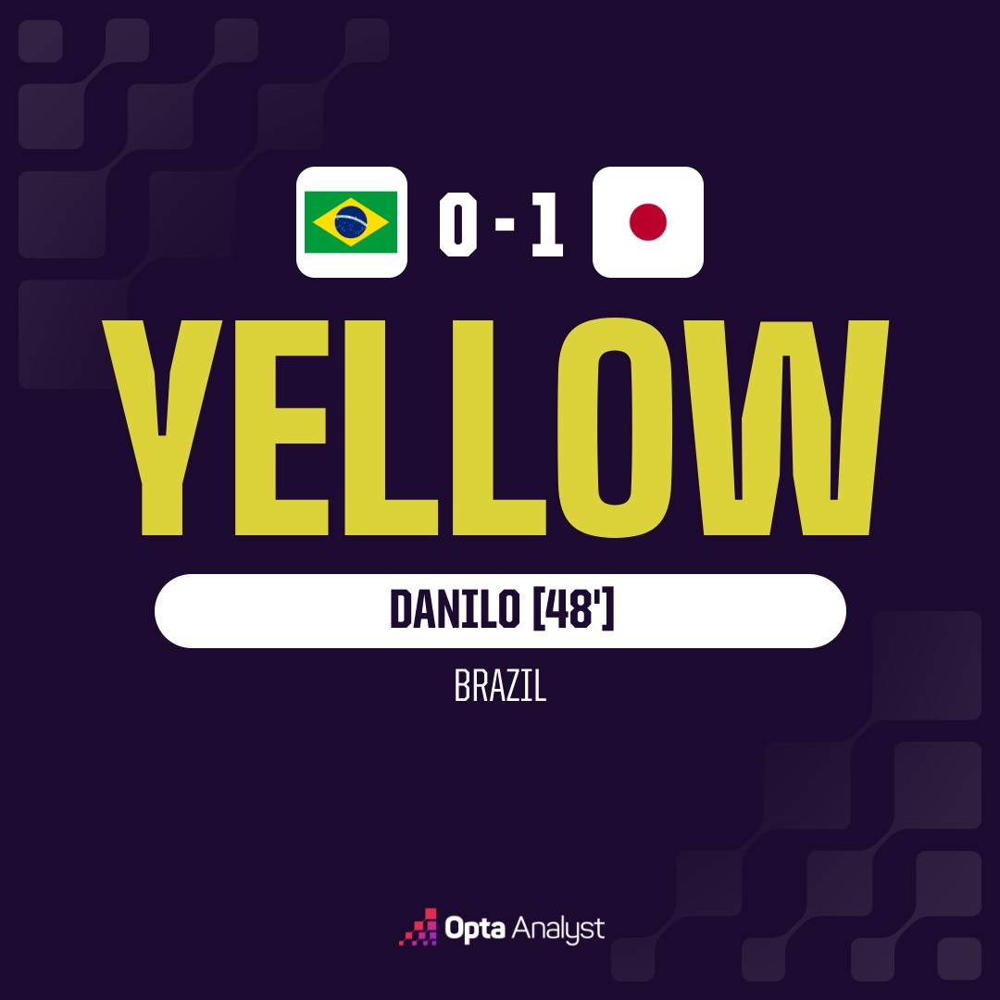
48'
A foul from Danilo on Daizen Maeda sees Japan win a free-kick, but it is not in a dangerous position, so Brazil should be confident they can defend it easily enough.
47'
Great defending from Japan, who are staying organised and winning key battles to preserve their lead.
46'
An enforced substitution for Brazil, as Lucas Paquetá cannot carry on after sustaining an injury. Endrick has hastily warmed up and now made their way onto the pitch in Lucas Paquetá's place.
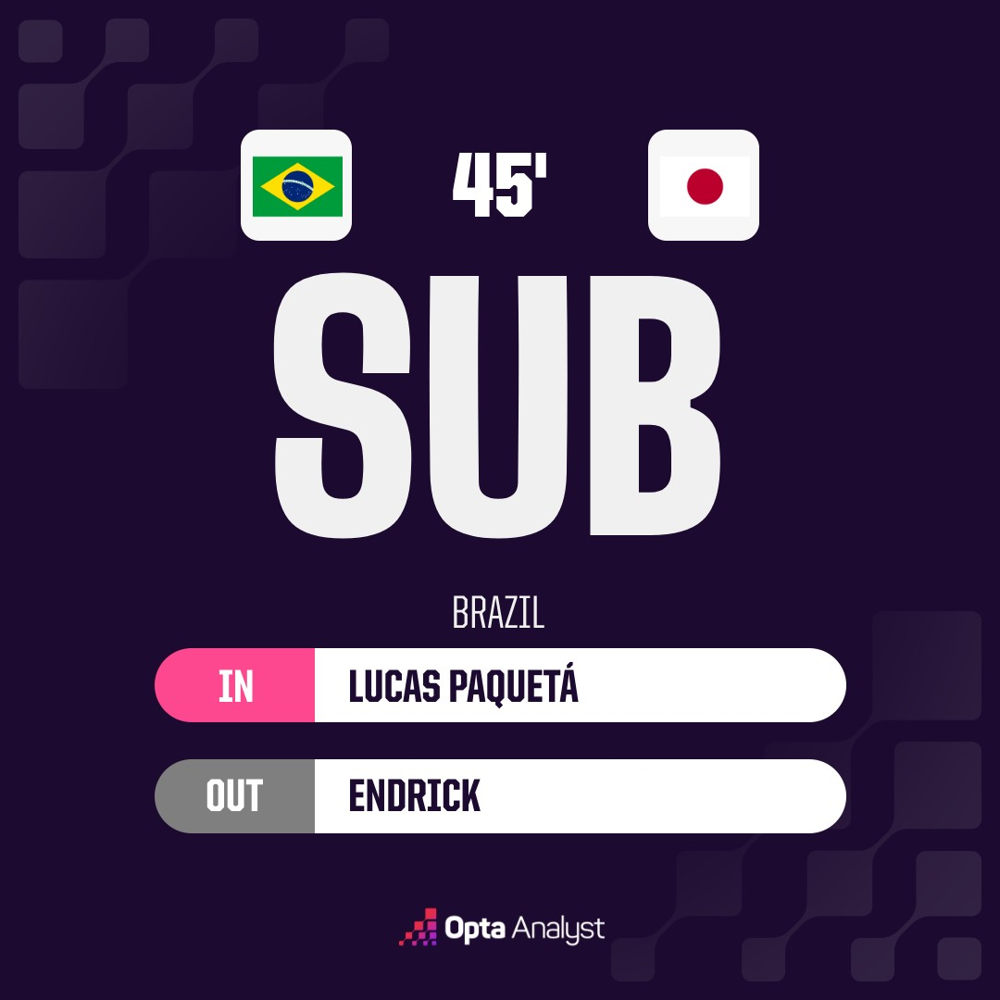
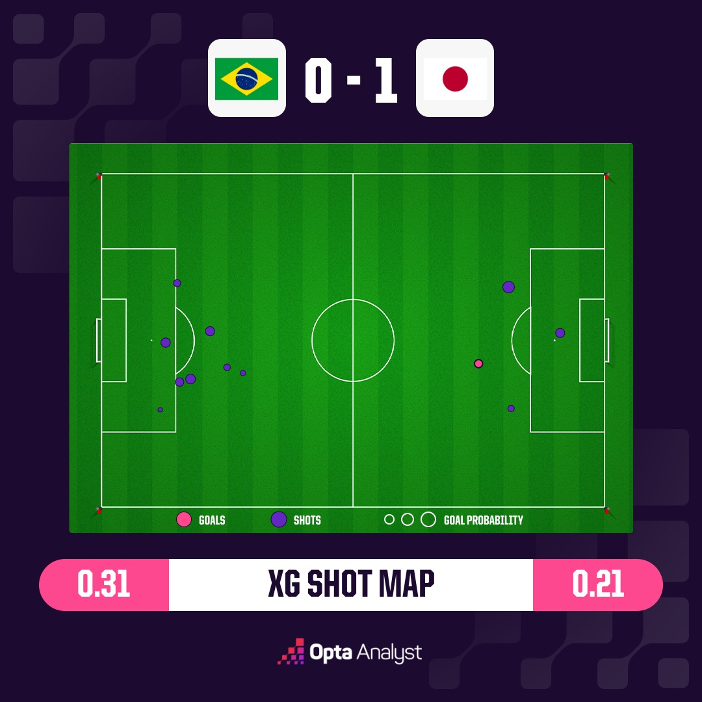
45+4'
The first half comes to a close and it’s Japan who have the lead over Brazil at Houston Stadium, with the scoreline 0-1 at the interval. Will Brazil turn this around after the break?
45+1'
Despite trailing, Brazil are showing real defensive grit, digging in and stopping further damage as they try to build a platform.
45+1'
BLOCK! An intervention from Shogo Taniguchi might have just prevented a goal, with the defending player getting in the way of an attempt from Lucas Paquetá. Solid defending there!
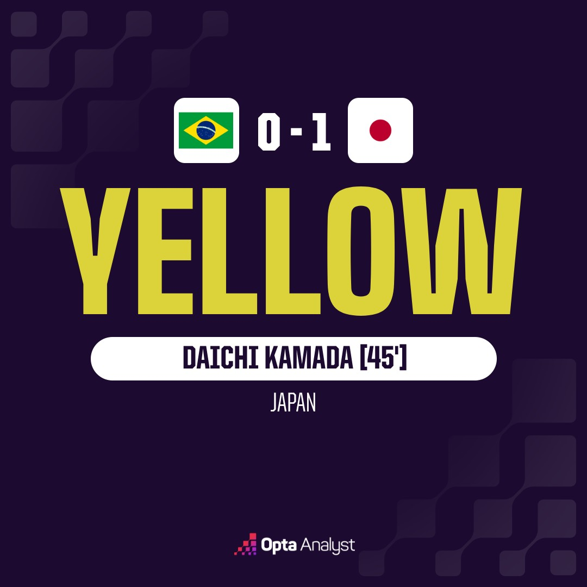
45+1'
The referee goes to their pocket and pulls out a yellow card, which is brandished in the direction of Daichi Kamada. Will they be able to avoid a second booking?
45+1'
A rash challenge from Daichi Kamada, who sends Bruno Guimarães tumbling, giving Brazil a free-kick. It is not in a threatening position, but it gives them a chance to get back on the ball.
45+1'
BLOCKED! That was close. Junya Ito got off a shot, which was heading in, but Casemiro was on hand to make a vital intervention. Great block!
42'
This is a team playing with assurance - Japan string together a long sequence and look determined to take a lead into the interval.
42'
Smart game management from Japan in this middle period. They're controlling the tempo perfectly, not allowing Brazil any sniff of goal for five minutes now.
38'
Save! A long-range strike from Matheus Cunha was heading in, but Zion Suzuki got to it to parry it away from danger.
35'
Excellent defensive work from Japan; their organization and success in key duels are effectively safeguarding their lead.
35'
Great block from Kaishu Sano, as they get in the way of an attempt from Lucas Paquetá that might have been set to cause the goalkeeper some problems. Solid defending from the Japan player.
34'
SAVE! A shot from outside the box by Brazil Vinícius Júnior was heading in, but Japan Zion Suzuki keeps it out with a smart stop.
33'
Offside! Marquinhos thought they were through on goal, but the Japan defence stepped up in time to catch them offside, and the assistant referee puts their flag up.
32'
Good play from Douglas Santos, who draws a foul from Ritsu Doan to hand Brazil a free-kick in a dangerous position. Will they create something from this set-piece?
29'
Japan have avoided defeat in their last 3 matches when scoring first in the FIFA World Cup, since a 2-3 loss to Belgium on 2nd July 2018.
29'
GOAL! That's the moment Japan were hoping for, as they now have the advantage after Kaishu Sano's strike from outside the area. Can Brazil find a way back into this, or will Japan go on and win it now?
29'
Kaishu Sano has scored his first goal in the 2026 FIFA World Cup.
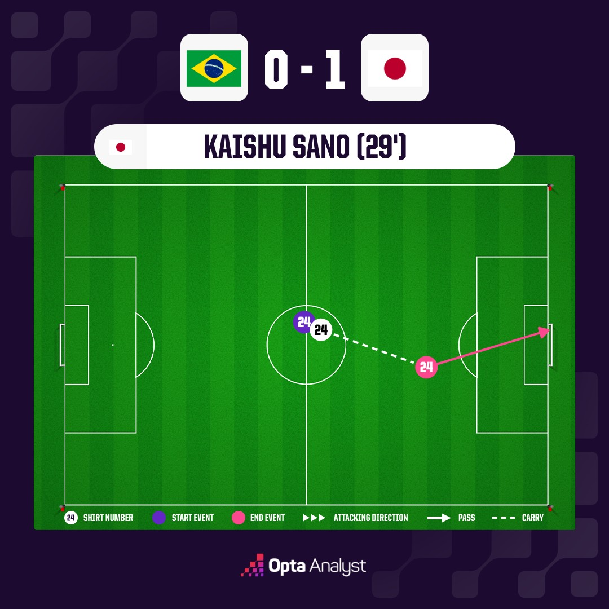
29'
Plenty of the ball in the last quarter-of-an-hour of this match for Brazil, but Japan have been able to hold them off with ease, with Brazil having failed to even muster a shot at goal.
28'
That is a disappointing effort from Ayase Ueda, who went for glory but got their attempt wrong, and the shot sailed off target. A frustrating moment for Japan.
27'
Corner! Japan are pushing for a goal and now they have an opportunity from this set-piece.
26'
Not much goalmouth action to speak of in this period of the game, with no attempts made from either side. This game could spark at any moment, however. It is Brazil who have had more of the ball, controlling 80 per cent possession in the last 10 minutes.
23'
It’s been tight so far, and Japan are making sure it stays that way with strong defensive discipline and well-timed clearances.
16'
Japan win a corner after Daichi Kamada sees a shot diverted wide by Casemiro. Can Japan make this opportunity count, or will Brazil defend this?
16'
There is plenty of possession for Brazil, with 70.48% compared to Japan 29.52 % in the last 15 minutes. However, Brazil have not been able to turn that dominance of the ball into a goal.
14'
Yellow card! Casemiro will have to be careful from now on after they are cautioned.
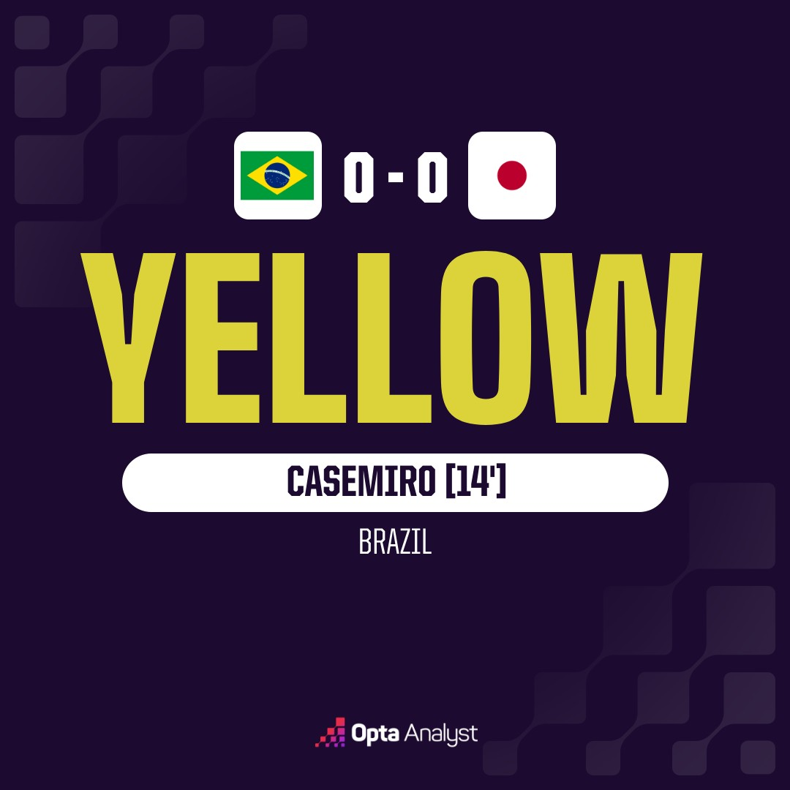
14'
Good play from Junya Ito, who draws a foul from Casemiro to hand Japan a free-kick in a dangerous position. Will they create something from this set-piece?
14'
MISS! The score remains 0-0, with Japan relieved after Brazil’s Bruno Guimarães goes for goal but sends their attempt off target. Not one to write home about, that one.
14'
A chance goes begging as Matheus Cunha gets off a shot that does not hit the target. They might have done better with that one, but instead it is a goal-kick to Japan.
12'
BOOKING! Yellow card for Kaishu Sano, who is penalised for a foul. The referee waves away their remonstrations, and now they will have to be careful.
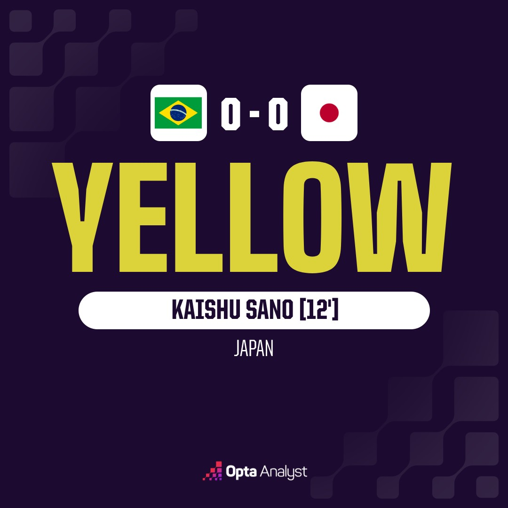
12'
Kaishu Sano goes in on Vinícius Júnior and concedes a foul. The free-kick is not in a particularly dangerous area from Japan’s viewpoint, though.
9'
Confident start by Brazil, knocking it around with purpose and keeping control in the opening phase.
7'
Kaishu Sano goes in on Vinícius Júnior and concedes a foul. The free-kick is not in a particularly dangerous area from Japan’s viewpoint, though.
2'
Bruno Guimarães's effort is deflected out for a corner. Can Brazil make anything of this set-piece?
1'
A rash challenge from Takehiro Tomiyasu, who sends Lucas Paquetá tumbling, giving Brazil a free-kick. It is not in a threatening position, but it gives them a chance to get back on the ball.
1'
And we are off! Strap in, folks, for this mouthwatering encounter between Brazil and Japan at Houston Stadium.
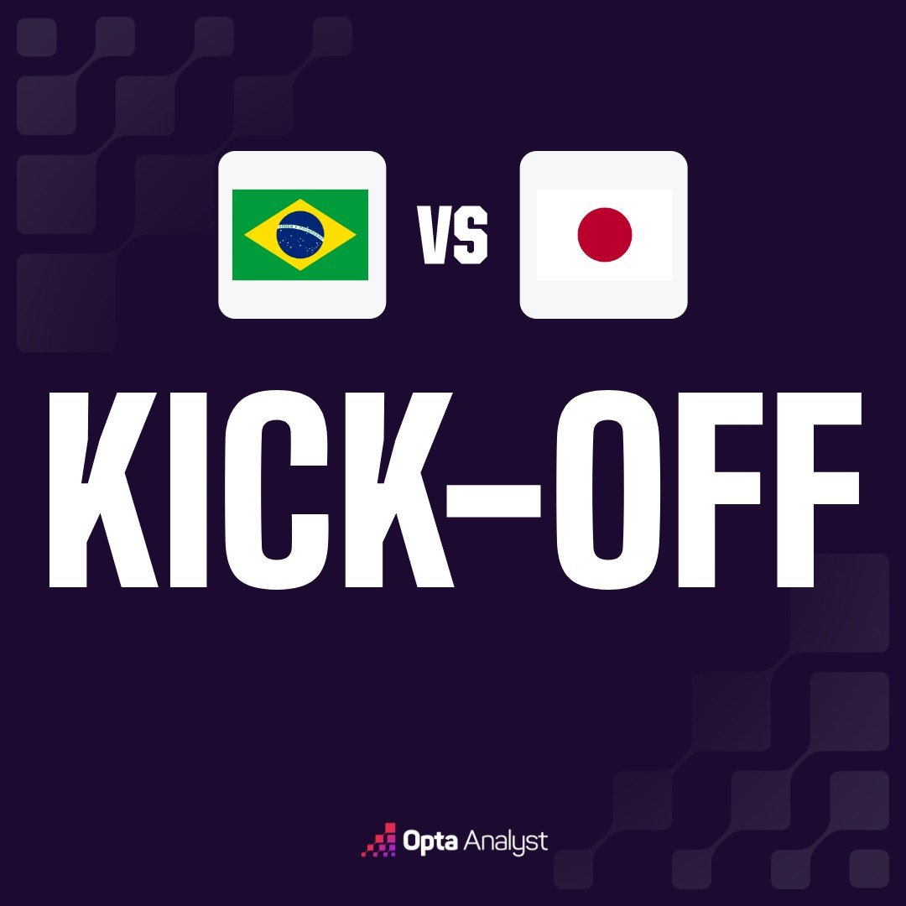
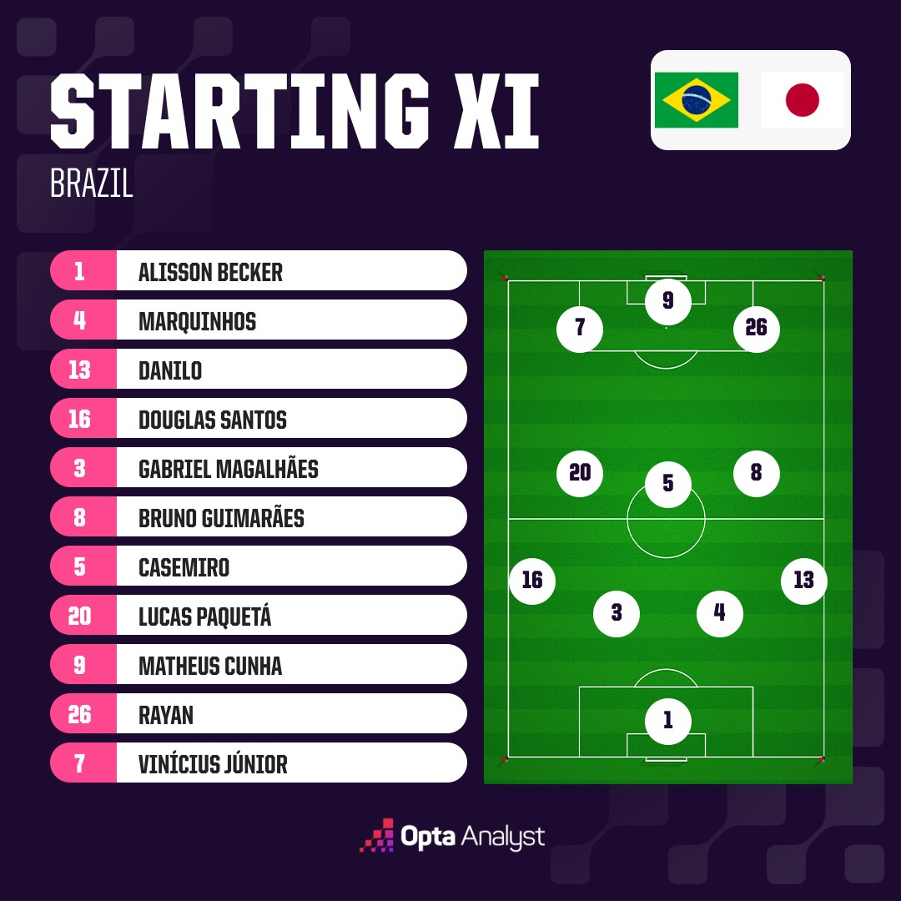
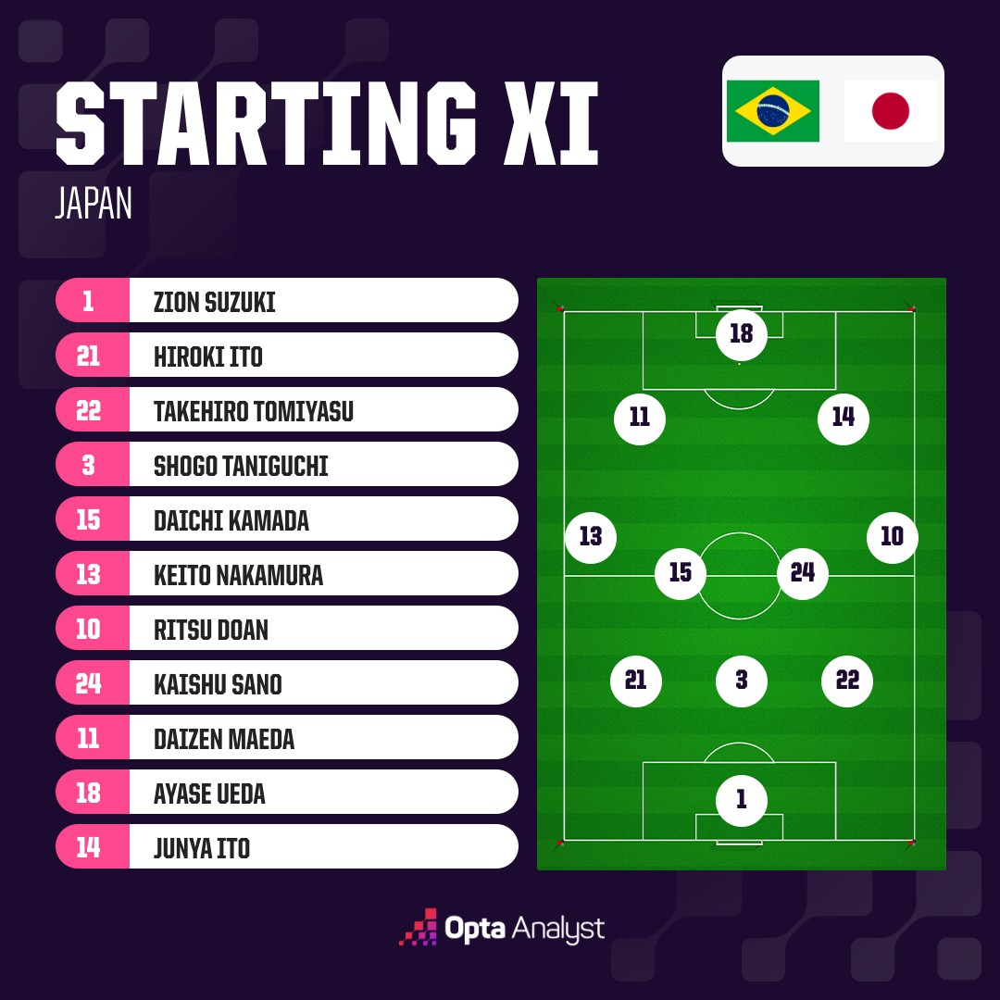
Vinícius Júnior has scored in the last 3 games for Brazil
Vinícius Júnior has scored in the last 2 home games for Brazil
Brazil have won their last 2 games when Vinícius Júnior has scored
Brazil play Japan on Monday for a FIFA World Cup Round of 32 clash at Houston Stadium.
Brazil defeated Scotland 3-0 in their last group stage match on June 24. Vinícius Júnior led the team with two goals. They are undefeated in their last six games in all competitions. In seven games this year, they have five wins, one draw, and one loss.
Japan played out a 1-1 draw against Sweden in their last game, a June 25 group stage clash at Dallas Stadium, improving their unbeaten streak to 10. Daizen Maeda scored in the draw.
Brazil finished first in their group on seven points, while Japan's five points placed them second.
When the two sides last met in action, Japan came out on top 3-2 in a friendly at Ajinomoto Stadium last October. Takumi Minamino opened the scoring for the Japanese side in the 52nd minute. Keito Nakamura and Ayase Ueda also were on the scoresheet. Paulo Henrique and Gabriel Martinelli were on target for the Brazilian side.
Júnior has caught the eye for Brazil in World Cup play. He is the side's top scorer with four goals, which is tied for the second highest in the competition's scoring charts, one of those having been the tone-setting first of the match. Daichi Kamada and Ueda have been Japan's most prolific players in this World Cup campaign, each scoring twice.
Both sides have found success in the final third in World Cup play, as each have found the net in every match in the competition this season.
In their last six matches in all competitions, Brazil have won five and drawn one. The Brazilian side scored 18 and conceded five over that period, scoring first in five of the six contests. A majority of their goals (10) came in the first half, while their opponents netted three times in the first 45 minutes. The Japanese side have won four and drawn two in their last six. The Japanese side scored 10 and conceded three over that period, netting first in five of the six. They had three goals in the first half, while their opponents failed to find the net before the break.
-
General
Possession 68.6% 68.6231.3831.4% Possession lost in defensive half 21 213434 Possession lost in middle third 26 263131 Duels 80 807575 Duels success rate 51.3% 51.2545.33345.3% Aerial duels 28 282828 Aerial duels won 46.4% 46.42953.57153.6% Successful dribbles 6 655 Fouls won 13 1344 Offsides 1 100 Corner awarded 6 622 -
Distribution
Passes 682 682313313 Long passes 45 454545 Long passes proportion (%) 6.6% 6.59814.37714.4% Passing accuracy 91.6% 91.64283.06783.1% Passes in opponents' half 476 476148148 Passing accuracy in opponents' half (%) 91.4% 91.38773.64973.6% Total passes in the final third 243 2437979 Passing accuracy in final third (%) 86.4% 86.4269.6269.6% Forward passes 377 377188188 Forward passes (%) 55.3% 55.27960.06460.1% Through balls 4 400 Final third entries 104 1044444 Penalty area entries 54 541313 Total open play crosses 32 3299 Crosses 39 391111 Crossing accuracy 25.6% 25.64118.18218.2% -
Attack
Goals 2 211 Shots 19 1955 Shots on target 7 722 Blocked shots 6 622 Headed shots 6 611 Shots outside the box 7 733 Shots inside the box 12 1222 Shots accuracy excluding blocked shots 53.8% 53.84666.66766.7% Shooting accuracy 36.8% 36.8424040.0% Key Passes 17 1733 -
Defence
Tackles 12 121010 Tackles success rate 58.3% 58.3334040.0% Clearances 19 194545 Interceptions 9 966 Recoveries 39 393333 Attacking third recovery 6 611 Defensive third recovery 17 172424 Midfield third recovery 16 1688 Recoveries in attacking half (%) 15.4% 15.3853.033.0% -
Discipline
Fouls conceded 4 41313 Yellow cards 2 233 Red cards 0 000